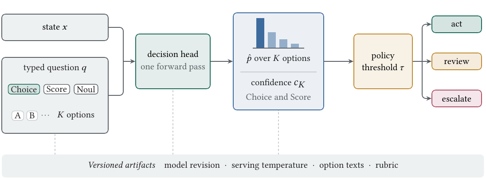
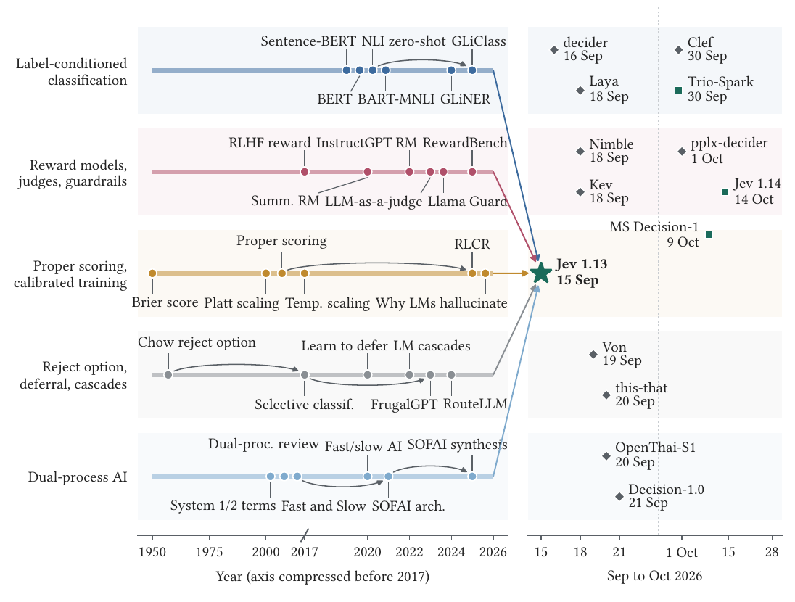
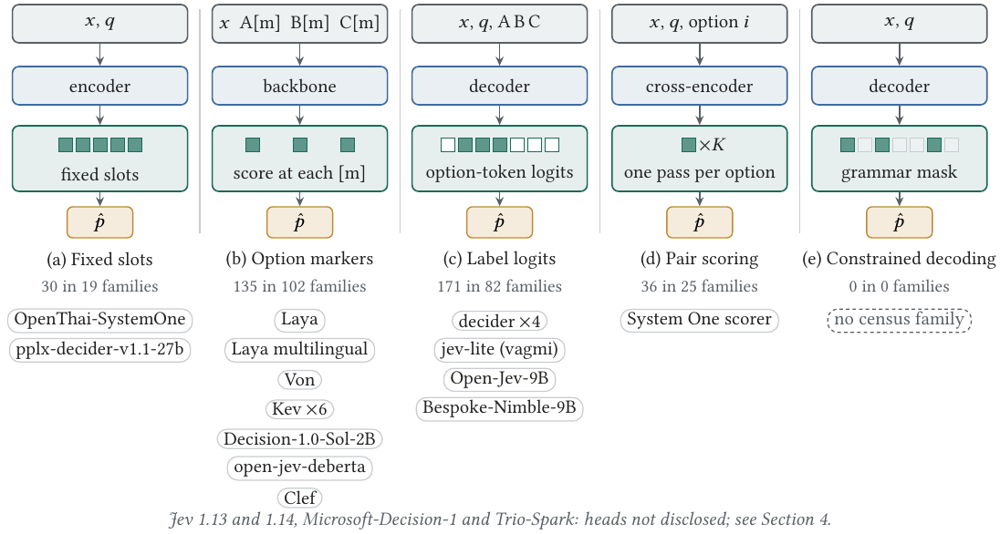

R1 · Transfer
The contract travels, robustness does not
Open models on public backbones reproduce the typed contract, while robustness to option names belongs to each checkpoint and must be tested per model.

Typed probabilistic decision models, which their first vendor calls System One models, return a probability distribution over a caller-declared answer space and promise that it is calibrated. They form a contract assembled from five research lines. The survey provides a genealogy, taxonomy, formal core, ecosystem census, graded evidence ledger, benchmark summary, pattern catalogue with failure atlas, and reporting standard. The evidence supports three regularities. The contract travels, while robustness to option names belongs to each checkpoint. Calibration belongs to the model and the task together. Escalation earns the saving when confidence ranks errors and the price gap is wide.
Open models on public backbones reproduce the typed contract, while robustness to option names belongs to each checkpoint and must be tested per model.
A calibration result for one schema does not carry over to another, so calibration is audited per schema rather than assumed from one report.
Sending uncertain cases to a stronger model saves money only when confidence ranks errors and the price gap to that model is wide.


A card for every open implementation and hosted model up to the cutoff of 28 October 2026, with its pinned revision and decision-head code.
Every extracted value with its verbatim excerpt and location, the study notes and the full-text excerpt checks.
Five-domain grades for every study, the 10 blind second-rater workbooks, agreement and the adjudication log.
The selection of every pooled number and the scripts that rebuild the ledger, the grades, the synthesis and the tables.
github.com/pozapas/system-one-models-survey, release v1.2.1. A curated index of papers, models, datasets and tools is maintained at awesome-system-one-models.
@misc{rafe2026systemone,
title = {System One Decision Models: A Survey of the Typed Decision Contract, Its Ecosystem and Its Evidence},
author = {Rafe, Amir and Das, Subasish},
year = {2026},
note = {Preprint, manuscript under review},
url = {https://pozapas.github.io/system-one-models-survey/}
}